평소보다 3배 느리게
속도보다 방향과 시작점·끝점을 먼저 의식합니다.
연필로 글씨의 뼈대를 바로잡고 붓펜으로 감정을 더합니다. 초급·중급·고급의 길을 따라 매일 15분씩, 천천히 나만의 글씨를 만들어 보세요.
새해 인사부터 캠프 티셔츠, 브랜드 로고까지 — 취미로 시작해 의뢰까지 이어진 제 개인 캘리그라피 포트폴리오입니다.
안녕하세요, 손끝으로 마음을 전하는 캘리그라피를 쓰는 윈솔입니다. 고등학교 시절, 반 서기를 맡았던 친구가 칠판에 써 내려가던 글씨가 너무 예뻐서 반해버린 게 손글씨의 시작이었어요. 그때의 설렘이 지금까지 이어져, 일상의 카드와 선물, 지인의 부탁으로 시작한 브랜드 로고 의뢰까지 — 눌러 쓴 순간들을 이곳에 기록하고 있습니다.
✏️ 작품 의뢰 안내 — 취미로 쓰는 캘리그라피라 비용은 받지 않습니다. 마음을 담아 써 드리고 싶은 문구가 있다면 이메일로 편하게 연락 주세요.
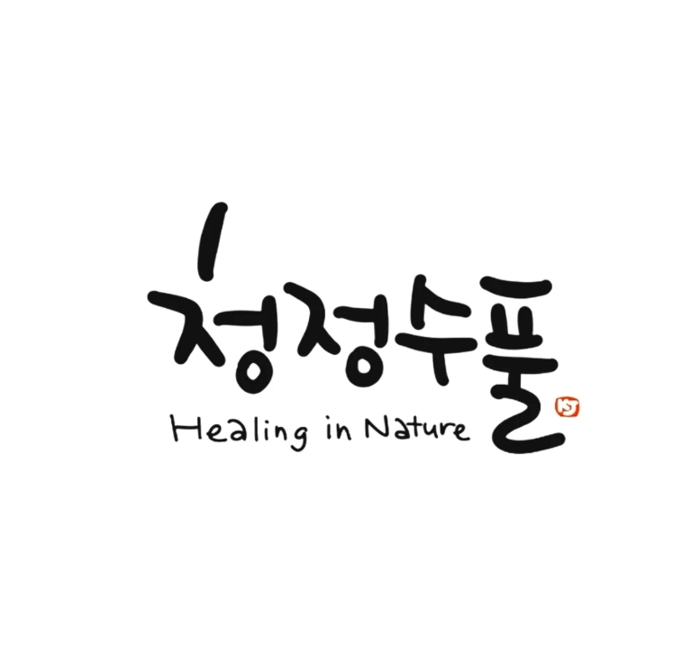
지인의 의뢰로 제작한 브랜드 로고 캘리그라피입니다. 손글씨가 시안에 그치지 않고 실제 상표 등록까지 완료되어, 지금은 브랜드의 정식 얼굴로 쓰이고 있는 작품입니다.
Trademark Registered · 브랜드 로고 의뢰 작업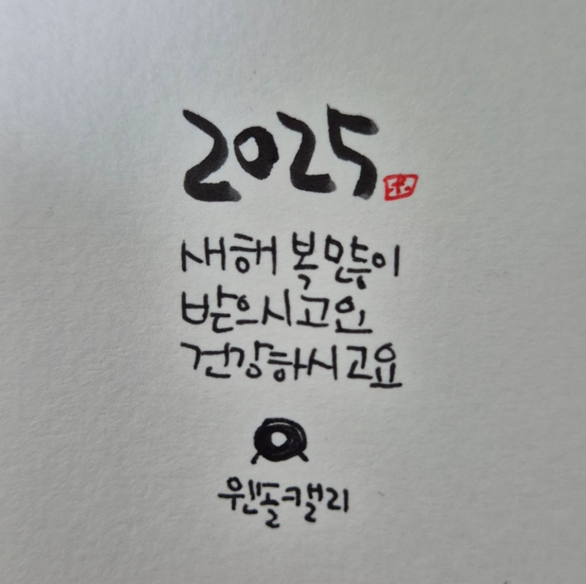
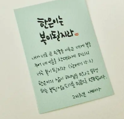
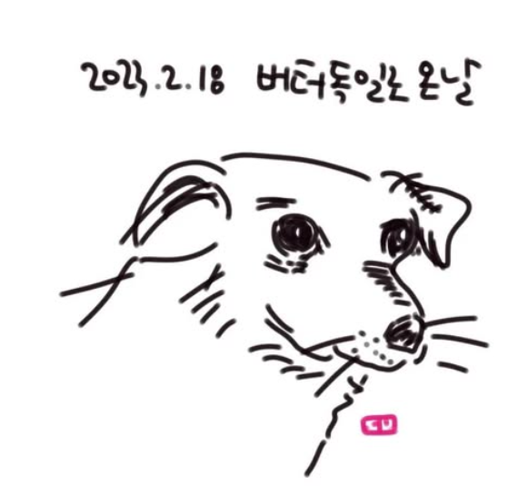
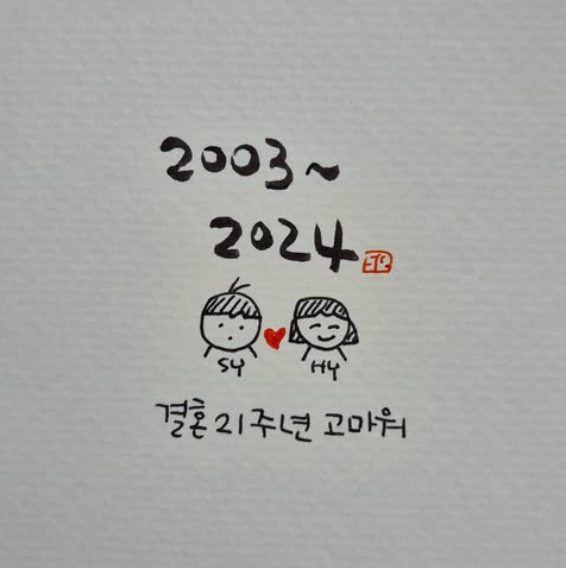
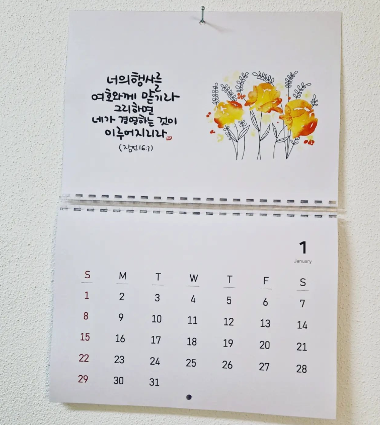
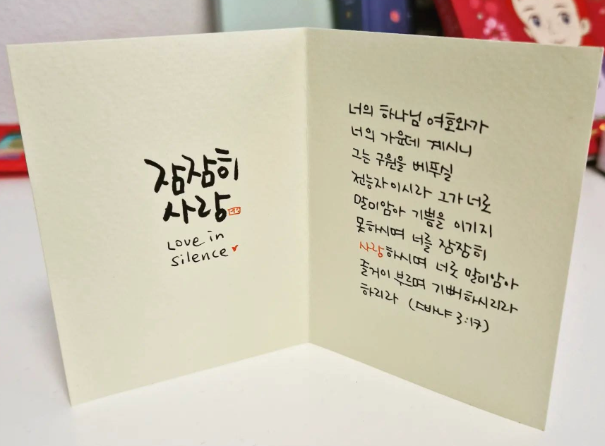
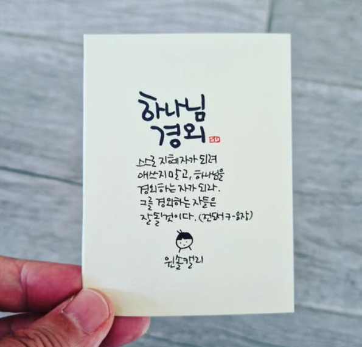
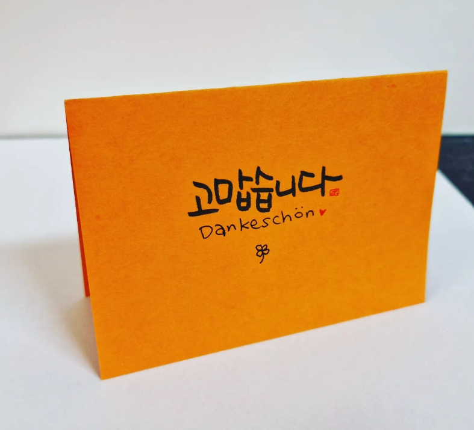
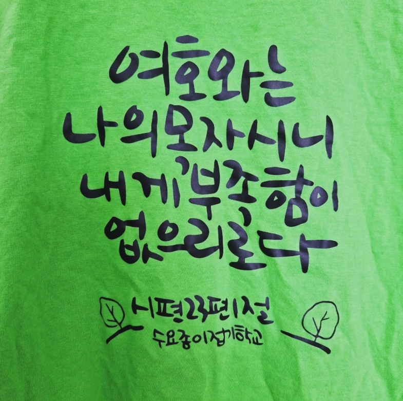
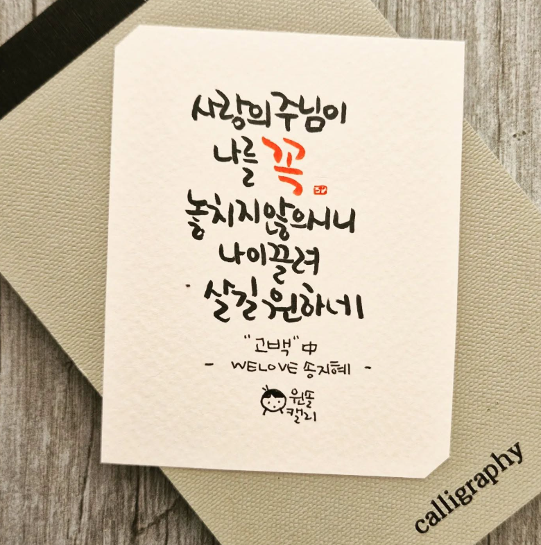
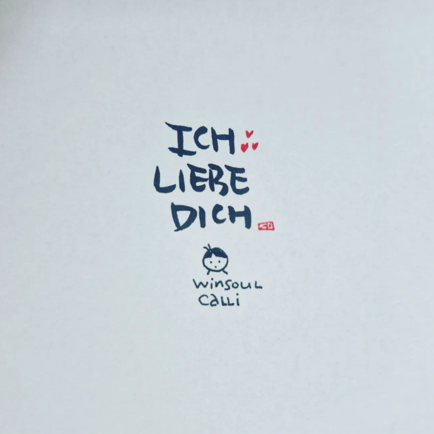
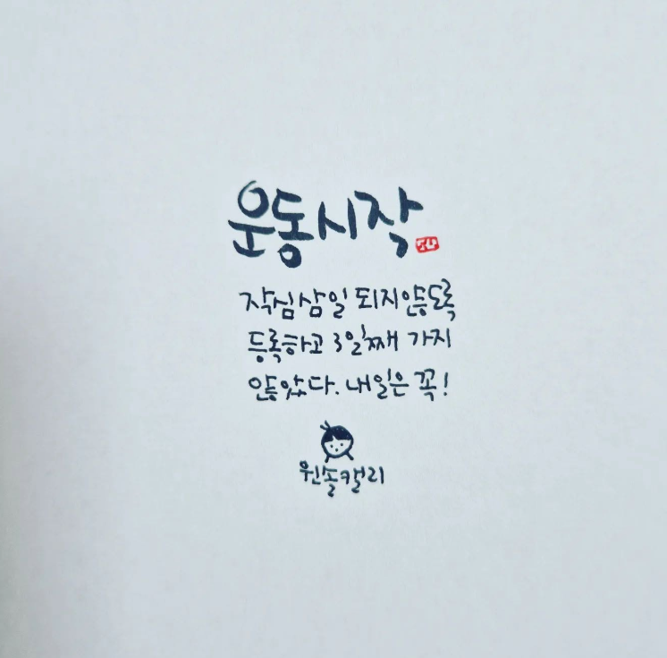
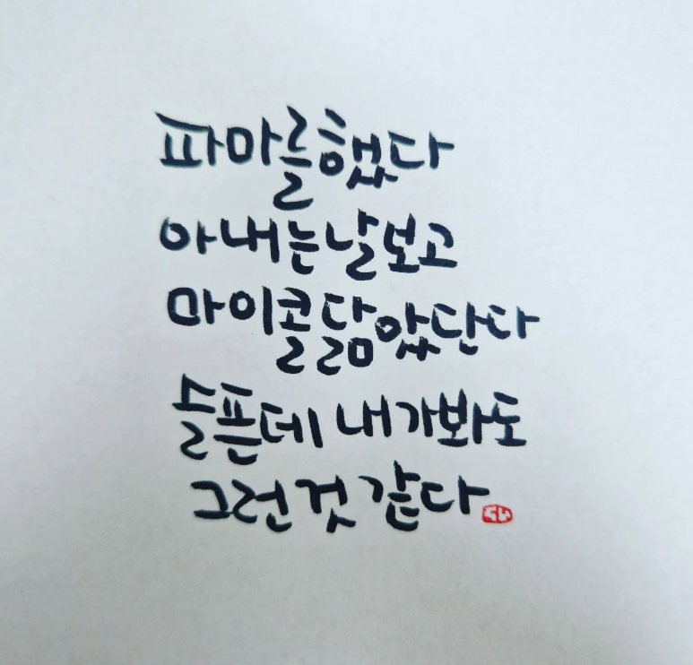
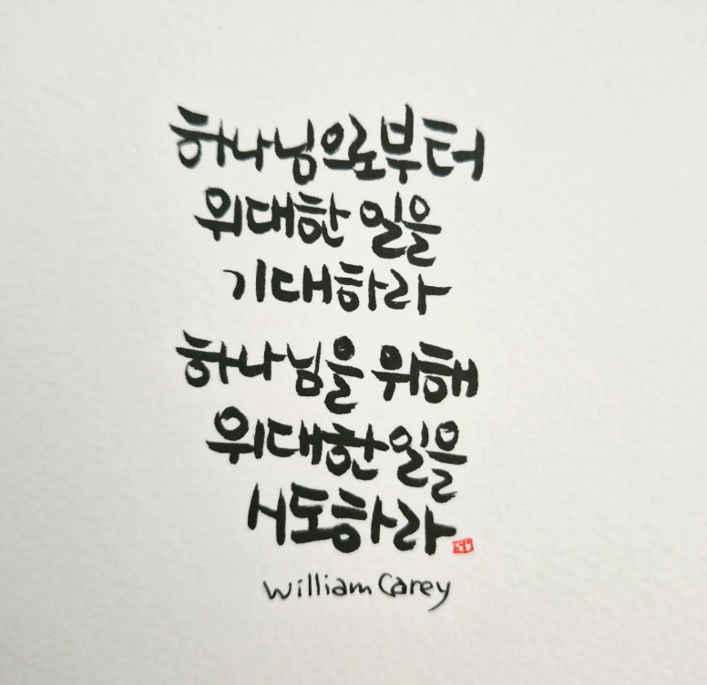
첨부 강의노트의 다섯 황금 법칙을 네 가지 행동 원칙으로 압축했습니다. 모든 단계에서 반복하는 공통 기준입니다.
속도보다 방향과 시작점·끝점을 먼저 의식합니다.
큰 글씨는 흔들림과 비율 오류를 숨기지 않습니다.
보고, 덮어 쓰고, 기억으로 쓰는 3단계로 익힙니다.
짧아도 꾸준한 연습이 손의 새로운 길을 만듭니다.
탭을 눌러 현재 수준에 맞는 수업을 펼쳐 보세요. 초급은 선과 한글 구조, 중급은 리듬과 문장, 고급은 스타일과 작품 구성에 집중합니다.
목표: 자세와 필압을 익히고, 자음·모음·받침을 안정된 비율로 씁니다.
완성: 내 이름과 한 글자 작품 · 권장 기간 2주
종이를 약 15도 기울이고 펜촉 2~3cm 위를 가볍게 잡습니다. 가로·세로·빗금·물결선을 칸 끝까지 긋습니다.
붓 끝으로 올라가는 선은 가볍게, 내려오는 선은 옆면이 닿도록 눌러 굵기 차이를 만듭니다.
모음은 길고 곧게, 자음은 중심에 둡니다. 받침 없는 글자는 1:1, 받침 글자는 초성:중성:종성을 약 4:4:3으로 봅니다.
재생 버튼을 누르기 전에는 YouTube와 연결되지 않습니다. 클릭한 영상만 개인정보 보호 강화 모드로 불러옵니다.
목표: 자간·행간을 고르게 하고 강약, 크기, 기준선 변화로 자연스러운 리듬을 만듭니다.
완성: 짧은 문장 카드 · 권장 기간 2주
글자 사이의 실제 거리가 아니라 흰 공간의 양이 고르게 보이는지 확인합니다. 쓴 뒤 눈을 가늘게 뜨고 덩어리로 보세요.
모든 글자를 강조하지 않습니다. 핵심 단어 하나에만 굵기나 크기를 더해 시선이 머무는 지점을 만듭니다.
기준선을 무작위로 깨지 말고 짧은 몸통은 살짝 올리고, 받침·내림 요소는 낮춰 리듬을 줍니다. 처음엔 변화 폭을 작게 잡습니다.
한 편을 본 뒤 같은 문장을 직접 써 보세요. 영상은 사용자가 선택할 때만 연결됩니다.
목표: 자신만의 글자 규칙을 만들고, 여백·위계·플러리시를 조절해 완성도 있는 작품을 설계합니다.
완성: 말씀 카드 또는 인용문 포스터 · 권장 기간 2주
기울기, 둥근 정도, 획 끝 모양, 글자 폭 네 가지 규칙을 정합니다. 자주 쓰는 12글자부터 스타일 시트를 만드세요.
문장 가독성과 간격을 먼저 완성한 뒤 빈 공간에 1~2개만 더합니다. 곡선은 기본 타원·나선의 반복으로 설계합니다.
큰 글씨+작은 글씨, 테트리스형, 세로형을 작은 칸에 먼저 그립니다. 가장 안정된 안을 트레이싱해 본지로 옮깁니다.
구도를 작은 썸네일로 먼저 따라 설계한 뒤, 두 번째 영상과 함께 최종 작품을 완성해 보세요.
첨부 자료의 교정 원칙에 붓글씨 교육 자료의 핵심 팁을 더했습니다. 증상에서 바로 해결법을 찾으세요.
붓펜의 굵기 차이는 속도가 아니라 압력에서 나옵니다. 올라갈 때는 펜 끝만, 내려갈 때는 붓의 옆면을 사용합니다.
한 번에 모양을 다 고치지 말고, 먼저 아랫선 또는 가운데선 하나만 맞춥니다. 다음 단계에서 글자 높이와 자간을 고릅니다.
플러리시는 좋은 글씨를 대신하지 않습니다. 먼저 글자의 리듬을 완성하고, 남은 공간에 균형 있게 1~2개만 넣습니다.
길게 한 번보다 짧게 매일이 좋습니다. 강의노트의 수업 순서를 집에서 반복할 수 있도록 15분 루틴으로 만들었습니다.
어깨와 손목의 힘을 빼고 가로·세로·물결선을 크게 긋습니다.
오늘의 핵심 획 하나를 정해 느리게 10번 반복합니다.
배운 획이 들어간 단어 또는 오늘의 한 문장을 씁니다.
멀리서 보고 한 가지 장점과 다음 교정점 하나만 적습니다.
각 체크 항목은 이 브라우저에 자동 저장됩니다. 쉬운 미션부터 차례로 완성해 보세요.
한 글자를 크게 쓰고 획의 굵기와 여백에 집중합니다.
핵심 단어 하나를 강조하고 자간과 기준선을 조절합니다.
큰 글씨+작은 글씨의 위계를 만들고 플러리시를 절제합니다.
원본 PDF를 열어 웹 수업과 함께 사용하세요. 작은 칸은 연필 교정, 큰 칸은 붓펜 표현 연습에 적합합니다.